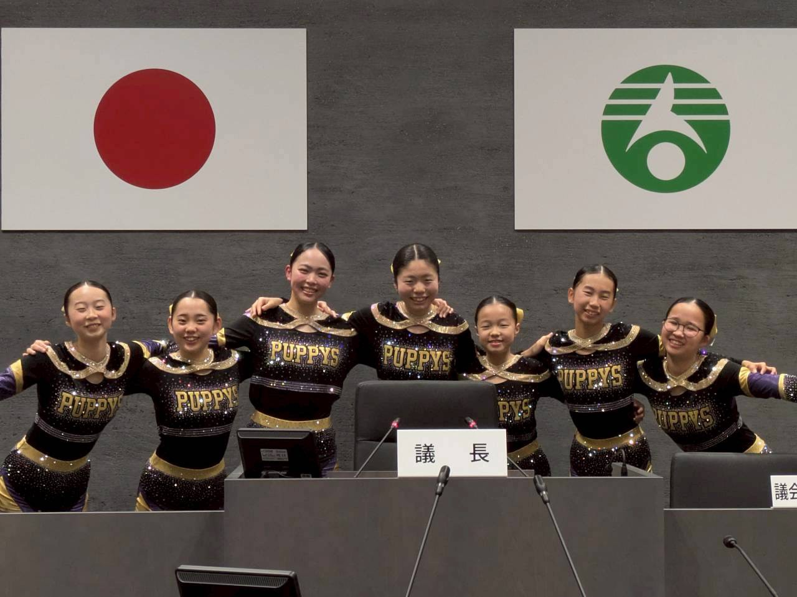
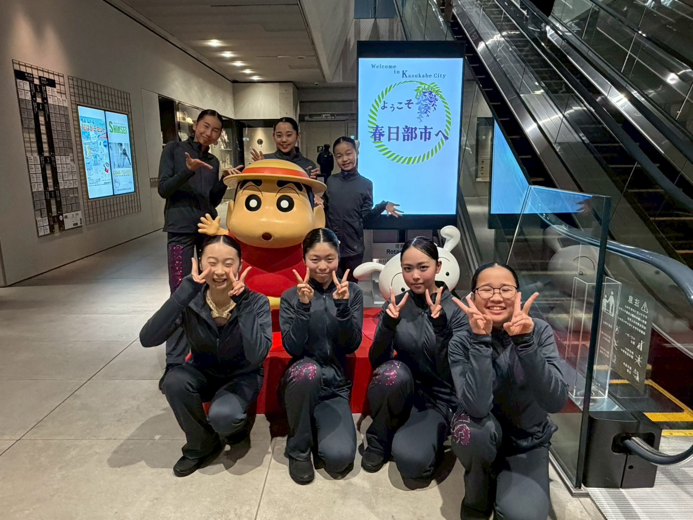

春日部市長を表敬訪問
全国1位と世界大会出場を報告
岩谷一弘市長から激励の言葉をいただきました

岩谷一弘春日部市長との記念撮影
2026年2月4日、POM PUPPYS brightのメンバー7名が春日部市役所を訪問し、岩谷一弘春日部市長にJAMfest JAPAN vol.23での全国1位獲得と、世界大会「The Dance Summit 2026」への出場決定を報告しました。
「春日部から世界へ羽ばたく子どもたちを応援したい」
— 岩谷一弘 春日部市長
岩谷市長からは温かい激励の言葉をいただき、メンバー一同、世界大会への決意を新たにしました。
また、市役所訪問では春日部市議会の見学もさせていただき、貴重な体験となりました。


POM PUPPYS brightは2025年11月のJAMfest JAPAN vol.23で、Pom Junior Small B部門において全国1位を獲得。先輩たちも成し遂げられなかったチーム初の世界大会出場権を獲得しました。
世界大会「The Dance Summit 2026」は、2026年5月1日〜3日に米国フロリダ州オーランドで開催されます。春日部から世界へ、メンバー一丸となって挑戦を続けてまいります。
引き続き応援よろしくお願いいたします。